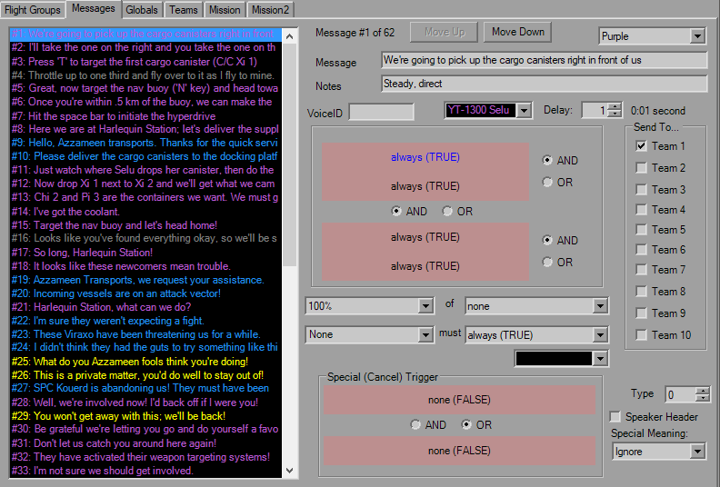

In-Flight Messages

Like the FlightGroup tab, Messages features a large list box that displays all of the in-flight messages in their respective colors. There's a maximum of 64 messages enforced to prevent file corruption.
XWA adds a few fields to play with over the previous platforms. You have a message string limited to 63 characters, a long note typically used for voice actor instructions, a short note normally used for the speaker's name and the FG it's coming from (haven't seen any real effects from this).
You have four triggers at your disposal plus two triggers that can be used to prevent the message from firing. Useful if the message is supposed to originate from a FG, and it's been destroyed before the message can fire. Can't transmit from the dead, can we? Although the copy and paste buttons aren't there, you can still use the buttons on the toolbar or the mouse. The Delay works as expected and is the number of seconds after the trigger is fired that the message is sent.
As in XvT, you can set the teams the message will be sent to, and again use Team 1 for single-player. There's also a couple Unknowns to boot.